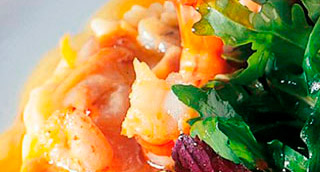

Arroz cremoso tratado como un Risotto, caldo de calabaza tostada y 4 moluscos con mantequilla de ajo y perejil.
"Arroz entre melós i risotto mojado con un caldo otoñal peculiar y unas notas de globalidad. Moluscos tratados comme il faut."

| Caldo de Calabaza Tostada | |
|---|---|
| Caldo de ave | 1 l. |
| Calabaza | 500 gr. |
| Curry | 2 gr. |
| Hoja Laurel | 1 un. |
| Pimienta en grano | 8 un. |
| AOVE | 50 ml. |
| Sal Marina | 1 cs. |
| Risotto | |
| Arroz Arborio | 240 gr. |
| Aceite de oliva | 50 ml. |
| Chalota o cebolla | 60 gr. |
| Vino blanco seco | 75 ml. |
| Caldo de Calabaza tostada | 800 ml. |
| AOVE | 50 ml. |
| Flor de sal | 1 cc. |
| Moluscos | |
| Almejas. | 8 un. |
| Berberechos | 12 un. |
| Mejillones del Delta | 12 un. |
| Agua mineral | 75 ml. |
| Sal Marina | 40 gr. |
| Acabado/Presentación | |
| Tejas de Parmesano | 4 un. |
| Mantequilla Bourguignone | 50 gr. |
| Hierba Fresca | 4 un. |
-
Caldo de Calabaza tostada
- Pelar la calabaza y cortarla a láminas de 1/2 cm. Disponerlas sobre un silpat. Rociar con el AOVE.
- Introducirlas en la parte superior del horno previamente calentado a 180º hasta que estén doradas.
- Calentar el caldo con el laurel, sal y especies. Añadir la calabaza y cocer a fuego muy suave 20'.
- Dejar infusionar hasta enfriar.a pasar por un colador muy fino y reservar hasta utilización. Risotto
- Calentar una cazuela con el aceite de oliva. Picar la cebolla y hacerla sudar.
- Añadir el arroz y nacararlo durante 2'. Desglasar con vino blanco y reducir a seco.
- Mojar a altura con el caldo de calabaza caliente y cocine el arroz durante 18' a fuego suave añadiendo más caldo regularmente.
- Termine ligando el arroz con un golpe de AOVE para que brille.
- La cocción de 4/5 min, depende del tamaño del huevo y la temperatura del mismo. Moluscos
- Lavar minuciosamente todos los moluscos.
- Poner a hervir el agua mineral con la sal. Preparar otro bol con agua y hielo.
- Cuando el agua rompa el hervor ir añadiendo los moluscos clase a clase y con el tiempo indicado en la línea inferior.
- Almejas: 5'; Navajas: 8'; Berberechos: 3'; Mejillones: 20';
- Retirar y sumergir unos segundos en el agua con hielo para cortar la cocción. Retirar.
- Con la ayuda de un cuchillo abrir los moluscos retirando la parte comestible y recuperando el agua que contiene.
- Reservar en frío tapados y protegidos para que no se sequen. Acabado/Presentación
- En un plato plano disponer con la ayuda de una cuchara sin aplastarlo.
- Colocar encima todos los moluscos. Añadir un poco de mantequilla de ajo y perejil. Fundir con soplete.
- Disponer encima las tejas de parmesano y el caldo de los moluscos ligado con Xantana.
- Decorar con alguna hierba aromática fresca.